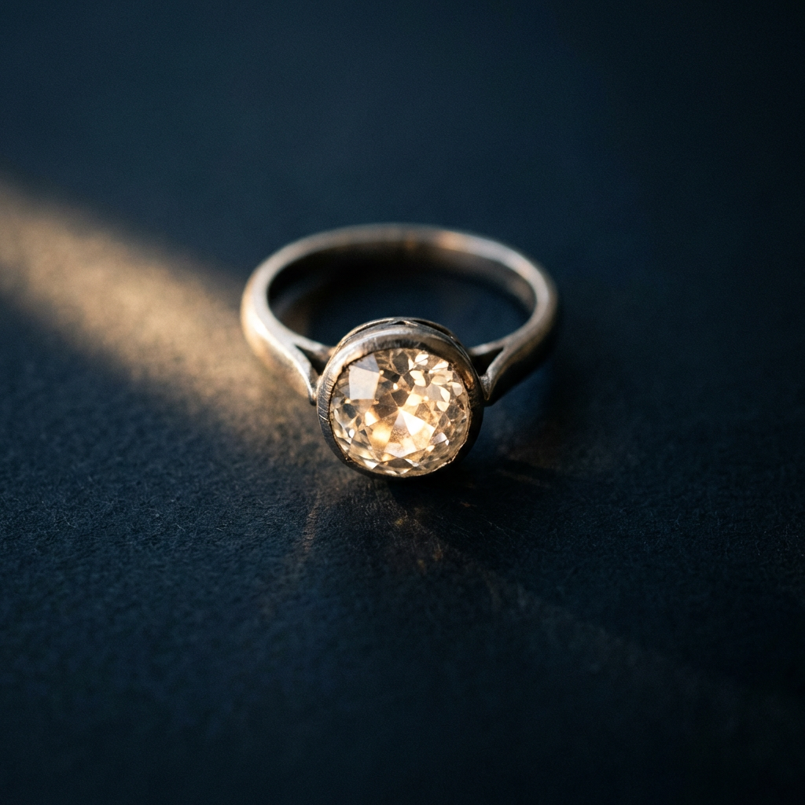
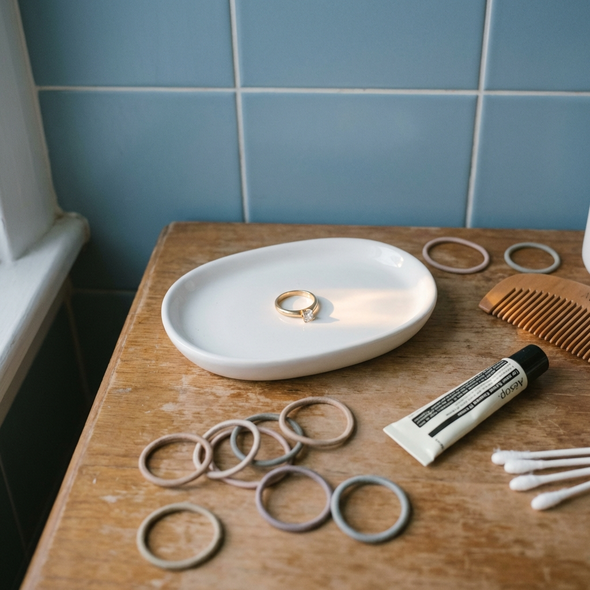
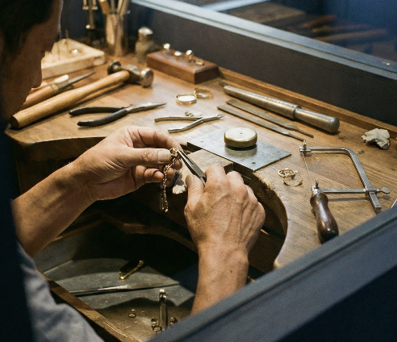
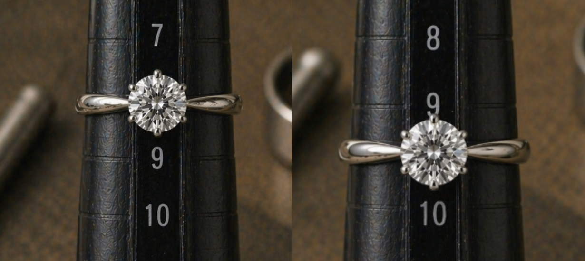
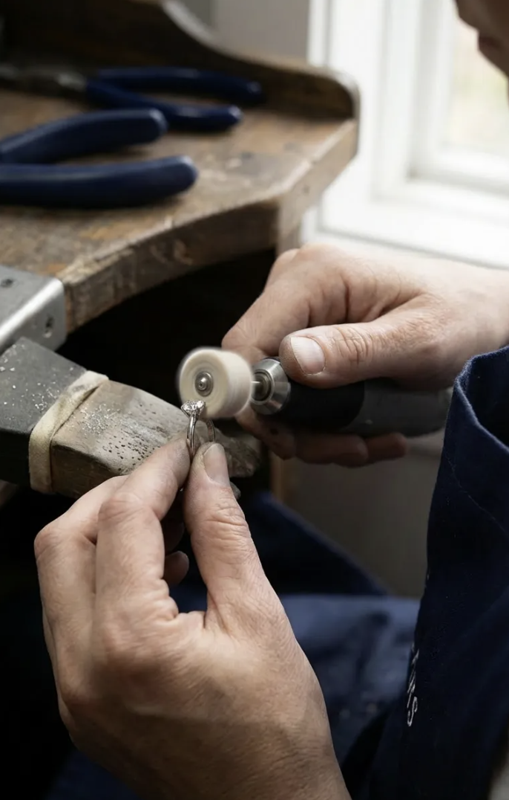

サイズの差が大きすぎて断られてしまった


サイズの差が大きすぎて断られてしまった
石付きの指輪でサイズ直しを断られた

刻印やデザインが消えてしまうのが不安

思い入れのある大切な指輪を手放したくない
症状を経験と専門知識で判断し、状態を正確に見極めます。

指輪に負担のかかる加工は行いません。大切な指輪を長く愛せる方法を選びます。

直せない場合も代替案やリフォームのご提案で、想いに寄り添います。
なぜRETOLD TOKYOをつくったのか
「パールは扱いが難しいから」と、祖母の大切なパールリングを引き受けてもらえなかったことが原点でした。
ジュエリーの価値は、素材やブランド名だけではありません。人から受け継いだ記憶や、自分を励ましてくれた時間も、たしかに価値です。
だからこそ、売る・直すの前に、まず丁寧に診る。直せること、直せないことを誠実にお伝えし、もう一度身につけられる形を探します。
他店で「無理」と言われたリングが見事に復活。諦めず相談して本当に良かったです。
40代 女性大切にしていた母の指輪を、丁寧に扱ってくださる姿勢に安心してお任せできました。
30代 女性難しいデザインでしたが、希望以上の仕上がりで感動しました。
50代 女性
使えずにしまい込んでいた指輪が、もう一度、日常に寄り添うリングへ指輪の写真とお悩みをLINEでお送りください。
専門スタッフが診断し、最適な方法とお見積りをご提案します。
ご成約後、大切にお預かりして丁寧にサイズ直しを行います。
シンプルなリング
石付きリング
ヴィンテージ・変形リング

ブランドリング
状態や構造によります。写真で確認し、加工可能性とリスクを無料で診断します。
石の種類、留め方、位置によって判断します。負担が大きい場合は別案をご提案します。
内容により異なりますが、通常はお預かりから約3週間から1ヶ月が目安です。
素材、サイズ差、石留め、構造により個別見積りです。まずは写真で概算をご案内します。
可能です。写真相談だけでも大丈夫ですので、LINEからお気軽にご相談ください。
写真を送るだけ / 見積り無料
LINELINEで無料相談する›